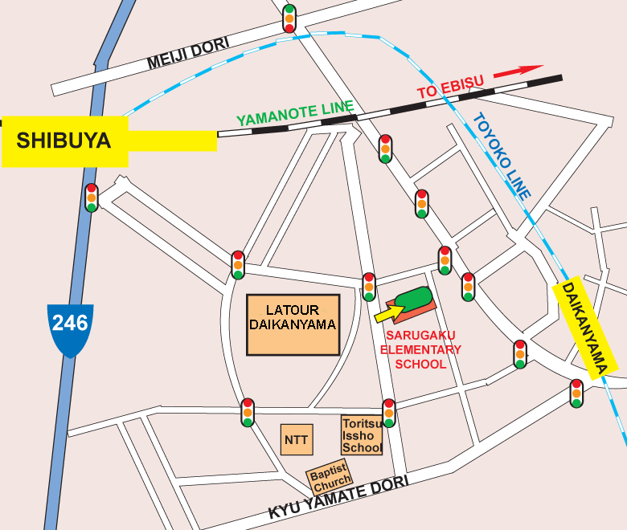

|
Sarugaku Elementary School, Daikanyama, Shibuya-ku.
Sarugaku is located in the heart of Tokyo and easily accessible from Shibuya, Hiroo, Ebisu, Roppongi and Azabu-Juban areas. The stunning all-weather surface is possibly the safest playing surface for children to practice and improve their football on and the British Football Academy are delighted to have access to such a high-quality sports field.
Flat-soled football sneakers with good traction, or moulded football boots are suitable for this surface and we asked that in light of the fact that some children will be wearing football boots, all children wear shin pads when attending BFA sessions at Sarugaku Elementary School. In the event of light rain sessions will continue as normal, if the weather is exceptionally bad, then please contact us at: info@footyjapan.com for real-time scheduling information.
GETTING THERE
By Train:
7 mins walk from Daikanyama Station on the Toyoko line, or about 10 mins from Shibuya Station South Exit. There is paid parking opposite and next to the enterance to the school, but please do not park on the road as the school WILL complain to us.
For a larger printable map, click here.
|
|


{kind=link}